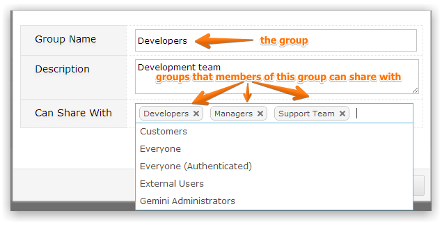
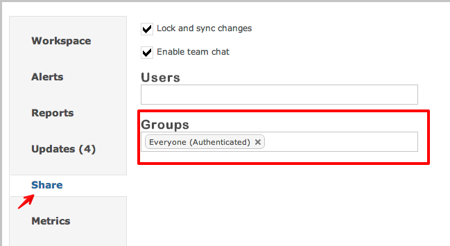

Workspaces allow users to share views and data. To determine which groups can share workspaces, click on the Edit icon on the right of the screen after the Group has been created. You will then see a multi-select drop-down for all of the User Groups in the system that members of the Project Group you have just created/edited can share with.

The interaction groups will show up when you change a workspace and select 'Share'.
